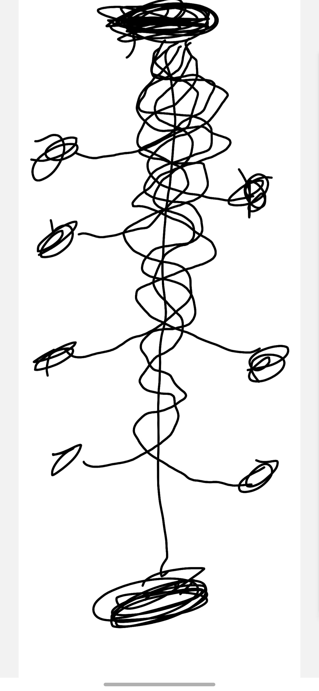

A Dynamic Interpretation of Gravitational Structure
By Mark J Azzopardi
This paper presents an extension to gravitational interpretation within a relativistic framework. While standard models describe gravity as static curvature, this work emphasizes that rotational dynamics and energy flow play a central role in shaping the evolution of that curvature.
The framework proposes a modification to the Einstein Field Equations by incorporating relativistic vorticity ($\Theta_{\mu\nu}$) and the evolutionary coupling constant ($\lambda$):

Imagine the "Top" as a White Hole inversion and the "Bottom" as a Supermassive Black Hole. With lateral vorticity from the "Sides," the system is perpetually twisting and pulling matter through a spiral manifold.
View the technical repository or download the full theoretical paper.
Explore Repository Download Full Paper (PDF)